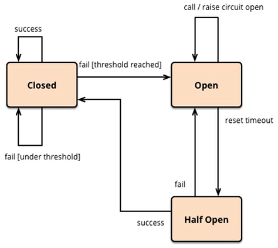

服务降级/熔断/限流
概念解释
服务雪崩
"扇出效应": 服务A -> 服务B, 服务C; B和C又调用其他微服务.
"雪崩效应": 如果链路上某个服务调用的时间过长或者不可用, 对服务A的调用就会占用越来越多的系统资源.进而服务崩溃.
服务熔断/服务隔离 (Fallback)
顾名思义，它是指将系统按照一定的原则划分为若干个服务模块，各个模块之间相对独立，无强依赖。当有故障发生时，能将问题和影响隔离在某个模块内部，而不扩散风险，不波及其它模块，不影响整体的系统服务。
分布式系统中,许多依赖不可避免的会调用失败, Hystrix能保证在一个依赖出问题的情况下, 不会导致整体服务失败,避免级联故障,提高分布式系统弹性.
"断路器" 本身是一种开关装置, 某个服务单元发生故障时,向调用方返回一个预期的.可处理的备选响应(fullback) 这样就可以保证服务调用方的线程不会被长时间占用
服务降级 (Break)
什么是服务降级？当服务器压力剧增的情况下，根据实际业务情况及流量，对一些服务和页面有策略的不处理或换种简单的方式处理，从而释放服务器资源以保证核心交易正常运作或高效运作。
服务限流 (Flowlimit)
限流可以认为服务降级的一种，限流就是限制系统的输入和输出流量已达到保护系统的目的。一般来说系统的吞吐量是可以被测算的，为了保证系统的稳定运行，一旦达到的需要限制的阈值，就需要限制流量并采取一些措施以完成限制流量的目的。比如：延迟处理，拒绝处理，或者部分拒绝处理等等。
Hystrix
项目构建
pom.xml
<!--服务熔断&降级-->
<dependency>
<groupId>org.springframework.cloud</groupId>
<artifactId>spring-cloud-starter-hystrix</artifactId>
</dependency>
启动类添加@EnableCircuitBreaker 启用断路器注解
@SpringBootApplication
@EnableCircuitBreaker
public class PaymentServer {
public static void main(String[] args) {
SpringApplication.run(PaymentServer.class, args);
}
}
降级处理
服务异常或者超时,都将执行timeoutHandler中的方法.
@Override
@HystrixCommand(fallbackMethod = "timeoutHandler",commandProperties = {
@HystrixProperty(name = "execution.isolation.thread.timeoutInMilliseconds", value = "5000")})
public String errrMethod(Integer id){
try {
TimeUnit.SECONDS.sleep(5);
} catch (InterruptedException e) {
e.printStackTrace();
}
return "服务超时演示!";
}
public String timeoutHandler(Integer id){
return "服务超时" + id;
}
全局服务降级
添加全局@DefaultProperties服务降级属性
@Service
@DefaultProperties(defaultFallback = "globalFallbackMethod")
public class PaymentServiceImpl implements PaymentService {
@HystrixCommand
public String errrMethod(Integer id){
int x = 1/0;
try {
TimeUnit.SECONDS.sleep(8);
} catch (InterruptedException e) {
e.printStackTrace();
}
return "服务演示!";
}
public String globalFallbackMethod(){
return "调用异常,这是全局降级方案!";
}
}
哪些情况会导致降级
- 程序运行异常
- 超时
- 服务熔断处罚降级
- 线程池/信号量 打满也会导致服务降级
熔断机制
当扇出链路的某个微服务出错不可用或者响应时间太长时, 进而熔断该节点的微服务调用,快速返回错误信息. 当检测到该节点微服务调用响应正常后,恢复调用链路.
熔断注解@HystrixCommand

半开效果, 断路器打开时,会尝试调用远程服务,如果远程服务可用, 断路器会自动关闭.
HystrixCommandProperties.class 包含了熔断的默认配置属性.
隔离策略
THREAD 线程池隔离, SEMAPHORE 信号池隔离, 如果采用线程池隔离,令牌中继的时候获取登录的Authorization为空, 所以无法进行令牌传递.
hystrix:
command:
default: #default全局有效，service id指定应用有效
execution:
isolation:
strategy: SEMAPHORE # 隔离策略: THREAD 线程池隔离, SEMAPHORE 信号池隔离, 如果采用线程池隔离,令牌中继的时候无法获取Authorization
thread:
timeoutInMilliseconds: 3000 #断路器超时时间，默认1000ms